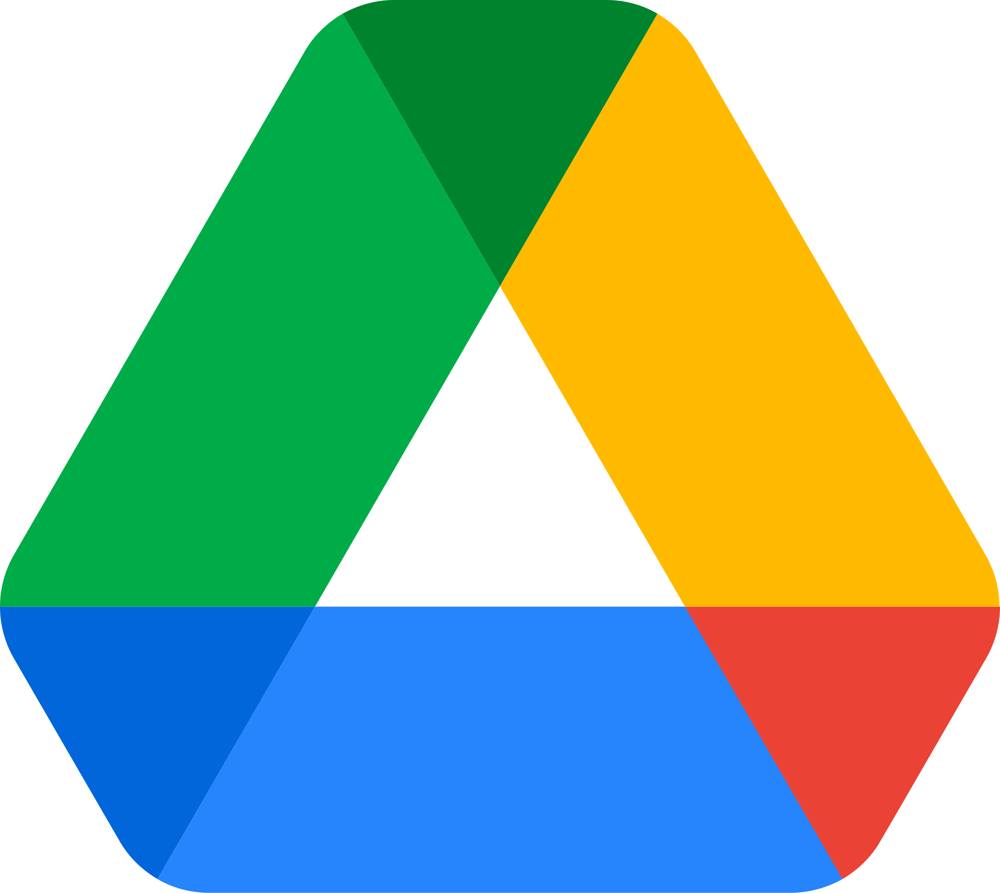
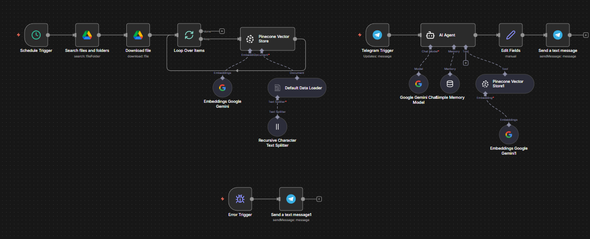
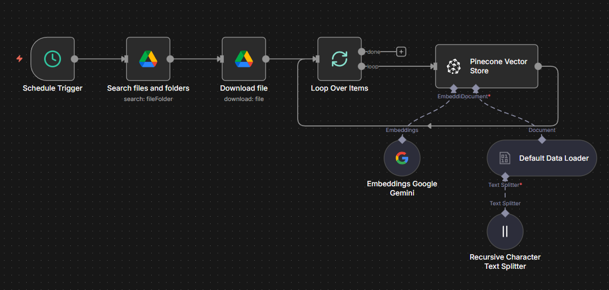
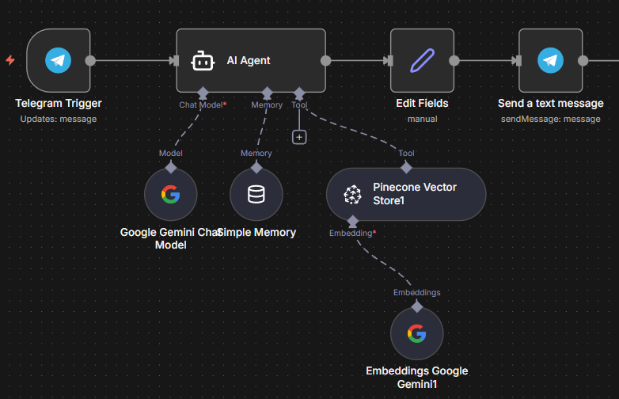
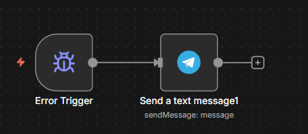

n8n automation / rag / telegram bot
Telegram 個人知識庫
一個可以讀取雲端文件、建立知識庫，並透過 Telegram 即時回答問題的 AI 助理系統。使用 n8n 串接 Google Drive、Pinecone、Gemini 與 Telegram，完成文件自動蒐集、向量化、RAG 檢索與自然語言回覆。

雲端文件來源
從 Google Drive 搜尋並下載 PDF / 文件，作為知識庫資料來源。

向量資料庫
透過 Gemini Embeddings 產生向量，寫入 Pinecone Vector Store。
RAG 智慧問答
把使用者問題轉成檢索任務，找到相關片段後交給 Gemini 回答。
即時聊天介面
Telegram Trigger 接收訊息，回覆整理後的自然語言答案或錯誤訊息。
System Flow
從文件到回答的完整鏈路
系統分成兩條路徑：一條負責定時同步雲端文件並更新向量庫，另一條處理 Telegram 提問、檢索知識庫並回傳答案。
01 / SOURCE
Google Drive
搜尋資料夾、下載文件，讓知識來源可持續更新。
02 / CHUNK
Text Splitter
Recursive Character Text Splitter 將文件切成可檢索片段。
03 / EMBED
Gemini Embedding
把文字轉成向量，建立語意搜尋基礎。
04 / STORE
Pinecone
儲存文件向量，供 AI Agent 作為工具檢索。
05 / CHAT
Telegram
使用者提問後，AI 生成答案並回傳到聊天室。
Workflow Screens
n8n 工作流拆解




Demo
實際問答展示
簡報中的測試流程先詢問與雲端文件無關的問題，再切換到知識庫相關問題，驗證 AI Agent 是否能根據向量資料庫內容回答。
BEHAVIOR
無關問題會顯示角色限制或回覆邊界，避免 AI 任意發散。
RAG ANSWER
相關問題會先從 Pinecone 找資料，再由 Gemini 組成可讀答案。
ERROR PATH
流程中若出現錯誤，會整理成訊息回傳 Telegram。
Implementation Notes
作品重點
自動化資料更新
透過 n8n 把雲端文件更新流程模組化，減少手動匯入知識庫的成本。
向量化與檢索
使用 Gemini Embeddings 與 Pinecone，讓 Telegram 問答能根據文件語意找到相關內容。
低門檻聊天入口
使用者只需要在 Telegram 發訊息，不必進入後台或額外系統。
可替換角色設定
AI Agent 的 system message 可依不同知識庫調整，例如金融助理、課程助理或內部文件助理。